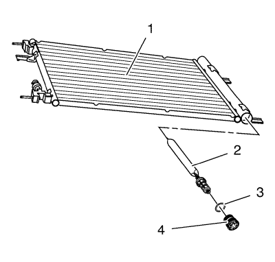

Sustitución del desecante del refrigerante del aire acondicionado
Herramientas especiales
GE-39400-A Detector de fugas halógeno
Si desea informarse sobre herramientas regionales equivalentes, consultar Herramientas especiales .
Procedimiento de desmontaje
- Recubra el agente frigorífico. Consultar Recuperación y recarga del agente frigorífico .
- Extraiga el condensador de aire acondicionado. Consultar Sustitución del condensador del aire acondicionado → 2.0L diesel LNP → LDE, LLU, LXT, LXV, L2W y 2H0 → 2.0L Diésel LLW .

- Retire el tapón del deshidratador y el receptor del aire acondicionado (4).
Nota: Tape inmediatamente todos los componentes del A/C para evitar la contaminación del sistema.
- Extraiga y deseche las arandelas de sellado (3).
- Retire el filtro de refrigerante del condensador.
Procedimiento de montaje
- Destape los componentes del A/C.
- Monte nuevas arandelas de estanqueidad (3).
- Monte el filtro de refrigerante (2) en el condensador del aire acondicionado .
- Monte el tapón del deshidratador y el receptor del aire acondicionado (4).
- Monte el condensador de aire acondicionado. Consultar Sustitución del condensador del aire acondicionado → 2.0L diesel LNP → LDE, LLU, LXT, LXV, L2W y 2H0 → 2.0L Diésel LLW .
- Vacíe y llene el sistema de agente frigorífico. Consultar Recuperación y recarga del agente frigorífico .
- Realice una comprobación de estanqueidad en los ajustes mediante el detector GE-39400-A.
| © Copyright Chevrolet. Reservados todos los derechos |